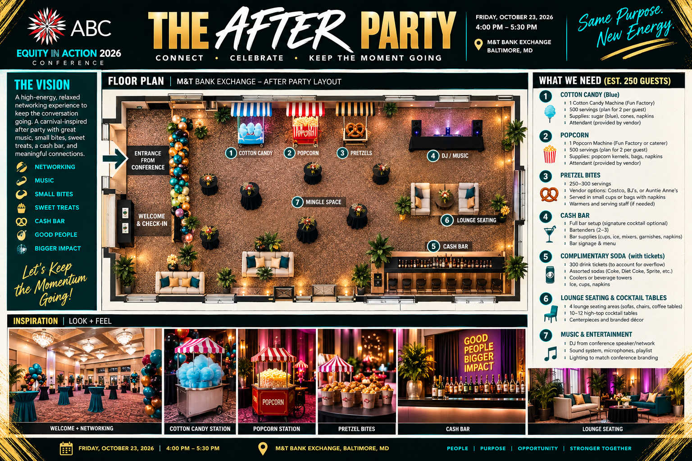

01 / EXPERIENCE DESIGNAssociated Black Charities · In development
Equity in Action 2026
A conference built to make equity tangible, collaborative, and impossible to ignore.
I’m helping shape the attendee experience, venue visuals, employer outreach, registration communications, and event operations for ABC’s October 2026 conference at M&T Bank Exchange.
Conference experienceEmployer cohortsEvent operations
Work in progress: multi-floor experience concepts, a Melanin Market plan for 20 vendor tables, an afterparty layout, and employer cohort packages for teams of five and ten. These are planning deliverables; event outcomes will be added after the conference.